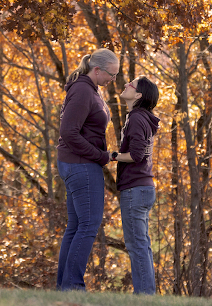
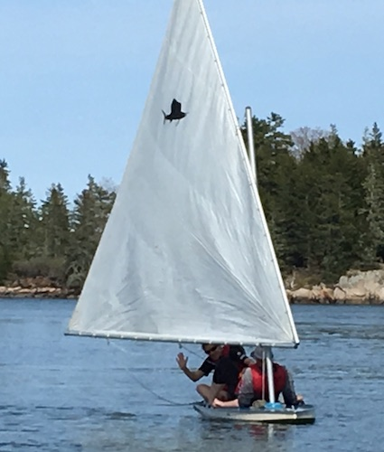

Diana Davis and Margo Angelopoulos
 
General | Accommodations | Wedding day | Wedding week | Wedding food | Attire | Location | How to get here | Things to do | Things to eat | Gifts
General
Thank you for coming to our wedding! Or so far, for coming to our wedding web site. We're really looking forward to spending time with you and celebrating on the coast of Maine.
WE STRONGLY ENCOURAGE YOU TO BOOK ACCOMMODATIONS AS SOON AS POSSIBLE
On the property: You are welcome to camp on the property, in a tent or in your camper vehicle. We may also have access to some unimproved buildings, enclosed with no electricity or plumbing. Let us know if you’d like to do this.
On the point: The following Airbnb properties are on our point, half a mile away on a private road.
"Seaside guest house" listed here, a hexagonal house!
"Kramer cottage" listed here
"Heron Watch": Two different listings for the same unit, here and here.
Other home rentals: Many people rent out homes on the island, often by the week and sometimes for shorter stays.
Hotels: All of the professional accommodations on the island are independently owned and operated. In every case, the owners are people who live on the island and enjoy sharing it with guests.
Deer Isle Hostel (5 mi): a self-sustaining homesteading operation that is off the grid
Inn on the Harbor (5 mi): Tall-ship-themed rooms right on Stonington harbor on Main Street in Stonington
Aragosta at Goose Cove (5 mi): Diana washed dishes here in high school. Beautiful freestanding cottages with water views, a beach, hiking, and an excellent restaurant.
Boyce’s Motel (5 mi): On Main Street in Stonington on the inland side of the street
Pres du Port (5 mi): Bed and breakfast within easy walking distance of Main Street in Stonington
Pilgrim’s Inn (3 mi) in Deer Isle village
Inn at Ferry Landing (7 mi): At the north end of the island with views of the Eggemoggin Reach
Wedding day: Here is a preliminary schedule of the day's events.
Morning: Join us for a faster run with Diana, a slower run with Margo, or a walk with Diana's parents. We'll go on the gravel roads of the point.
Middle of the day: On your own. Take a hike on Barred Island (since it will be low tide) and get yourself some tasty local food (see below).
2:00pm: Show up! Get your goodie bag, your PFD and your boat assignment.
2:00-2:30pm: Launch boats.
2:00-3:00pm: Paddle your little boat around the cove. Practice doing it well.
3:00 SHARP! Ceremony.
3:15 Take some pictures of everyone in boats and Margo and Diana all married up.
3:30 Diana and Margo sail away
3:30-4:30 Paddle around again, then dock boats.
4:00-5:00 Drinks and light appetizers.
5:00-7:00 Dinner and cake
5:31pm high tide
6:00-8:00 Music, lawn games, other games.
7:59pm sunset
8:00++ campfires and s'mores
Wedding week: If you are around for more time than just Saturday, we'd love to hang out with you. Let's go for a sail, a hike, a swim, or a paddle. We plan to provide outdoor meals on Friday and Sunday, and other days if people will be around; let us know when you plan to be in the area.
Food: We will provide tasty plant-based foods and label them as such.
Attire: dapper seaworthy. Everyone will need to walk on uneven ground and navigate granite ledges, so please wear sensible shoes with a grippy tread.
Bring a long-sleeve shirt with a hood, long pants, and socks to change into in the evening. The mosquitos come out in force at 8pm sharp.
The weather in Deer Isle is likely to be in the 60s-70s during the day, and in the 40s-50s at night.
Location: 70 Osprey Point Drive, Deer Isle ME
Note: If you put the above address into your GPS, it will take you to roughly 40 Osprey Point Drive, or to Watts Lane. Don't stop there; keep going on Osprey Point Drive. Our driveway has a sign that says BISCHOFF and DAVIS and also has a wooden moose.
Here is a link to our location.
How to get here:
Drive: See above for location.
Bus: You can take the bus from Boston South Station to Bangor, then rent a car and drive 1.5 hours (see above).
Train: You can take the train to Brunswick, then rent a car and drive 2.5 hours (see above).
Fly (commercial): You can fly into Bangor (1.5 hours), Portland (3 hours), or Manchester (5 hours), or Boston (5 hours), and then rent a car and drive (see above).
Fly (private): You can land a tiny plane at Stonington Airport.
Sail: Get in the spirit. Guest moorings available. We are located near Current Island in Southeast Harbor.
Things to do
Deer Isle is far from everywhere else -- that's a feature, not a a bug. Since you're making the trip, we encourage you to take a few days, preferably a week, to explore the area. Here are some things to do.
On Deer Isle
Explore Stonington, a delightful fishing village
Take a hike! Here is a map of the many places to explore. We especially recommend Barred Island, the Tennis Preserve and the Settlement Quarry.
Take the Mail Boat from Stonington to the outlying islands
Visit Nervous Nellie's, explore Peter Beerits' magical village and then eat a hot scone with jam
Watch the tide come in and out. Deer Isle experiences two 12-foot tides each day. You can actually watch the water level rise and fall in real time if you look closely.
Read this list of things to do on Deer Isle.
Eat tasty local seafood (see below).
Further afield
Acadia National Park is a national treasure. Diana's favorite parts are the carriage trails, and Thunder Hole (at mid-tide on an incoming tide).
The Penobscot Narrows Bridge is the highest suspension bridge observatory in the world, and the only one in the U.S. The historic Fort Knox is adjacent.
Cute towns: Castine, Belfast, and basically all the other towns along Route 1 in Maine also
Things to eat
Lobster: Stonington is the largest lobster fishery in Maine. We recommend purchasing live lobsters at the Stonington Lobster Co-Op, or eating a prepared lobster dinner at the Harbor Cafe in Stonington.
Crab: Arguably more delicious than lobster. We recommend purchasing crab meat at Coldwater Seafood in Stonington.
Clams: Digging clams is a staple of the island economy for many people who want to live off of harvesting seafood but don't have a lobster boat. They are delicious both steamed and fried.
Mussels: We used to be able to harvest them right off of our rocks, but commercial fishermen with drag nets over-fished the area and somehow they all disappeared. The commercial fishermen are still finding them somewhere. They're delicious steamed, which is how we always fixed them, and they're also great smoked; you can buy those at Coldwater Seafood in Stonington.
Oysters: Abby Barrows cultivates oysters in her Long Cove Sea Farm a half-mile kayak ride from our home. Click the link for information on how to buy them.
Fried fish: Go to the Fish Fry on Friday nights (other nights are also great) at the Harbor Cafe in Stonington.
Smoked fish: Richard Penfold smokes great fish. Further information here.
Restaurants
Harbor Cafe in downtown Stonington is where the locals go year 'round. They sell lots of seafood and have a large menu of other options.
There's A Treat on Route 15 north of Deer Isle Village. A takeout place with picnic tables and really great fried fish.
Aragosta at Goose Cove Lodge is a beautiful place with a great view and great food. In summer 2020 for lunch there was eat-in or take-out, and for dinner it was a fixed price tasting menu for $80.
Grocery stores
The Galley and Burnt Cove Market are two grocery stores on the island. The Galley is a mile north of Deer Isle village on Rt 15 and Burnt Cove Market is across from Burnt Cove (duh) on 15A about a mile north of Stonington. You can buy food there and then cook it.
Gifts: We are fortunate to have most everything we need to build a wonderful life. We are so grateful that you are coming to share this day with us, and that's all we need from you. If you'd really like to bring a gift, here are some suggestions.
Something handmade that reflects you or our relationship with you
A list of all of the brands that sell women's pants (including jeans) that have a 36-inch inseam
Tiny sailboats between 2 and 5 inches tall
Someone who will keep track of Diana's receipts and file for her reimbursements every month or two, and also to make her flight arrangements if flying is ever a thing again
Diana Davis and Margo Angelopoulos, 20 Main Street, Exeter NH 03833
dianajdavis@gmail.com, margo.angelopoulos@gmail.com